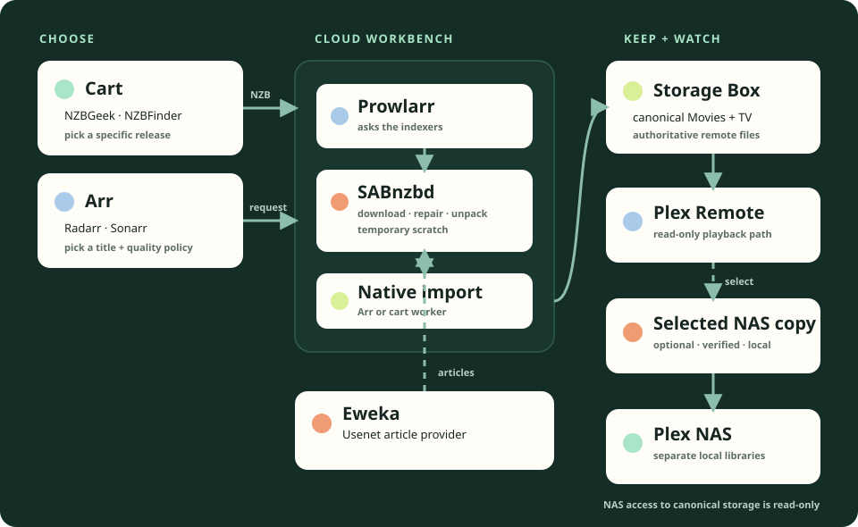

Indexers find
NZBGeek and NZBFinder catalogue posts and produce an NZB: a small instruction file that points to article pieces on Usenet.
NZBGeek · NZBFinder · Prowlarr
Ryan's home stack · private reference
What each piece does, how a request becomes something playable, and where to look when the conveyor belt stops.
01 · The mental model
Usenet sounds complicated because several small tools each own one step. The cleanest model is: find a pointer, fetch the pieces, organize the result.
NZBGeek and NZBFinder catalogue posts and produce an NZB: a small instruction file that points to article pieces on Usenet.
NZBGeek · NZBFinder · Prowlarr
SABnzbd reads the NZB, asks Eweka for the article pieces, checks them, repairs missing parts when possible, and unpacks the result.
Eweka · SABnzbd · PAR2
Radarr, Sonarr, or the cart importer moves a verified completion into the canonical library. Plex discovers it there.
Radarr · Sonarr · cart importer · Plex
02 · The system map
The Storage Box is the canonical home. Cloud scratch is temporary. A NAS copy is optional and deliberately selected.

03 · Open the right door
Private addresses work on the home network or its existing VPN route. Each application keeps its own login; this page does not bypass one.
04 · Daily use
Release-first
Best when you care about the exact release. Cart jobs are not automatically owned by Radarr or Sonarr.
Title-first
Best when you care about the title and quality policy more than a particular release.
05 · Storage boundaries
The authoritative Movies and TV files live here. Cloud applications can write through the controlled import path. The NAS receives read-only access.
SAB downloads, repairs and unpacks here. It is working space, not a library and not a backup. Failed or retained jobs continue to consume capacity.
An optional selected copy for local playback. Copying verifies the selected source and destination; it does not subscribe the NAS to future episodes or upgrades.
Encrypted scheduled archives cover configuration, databases, controller state and integrity receipts. They do not duplicate the whole media library or establish whole-NAS disaster recovery.
06 · Evidence, not optimism
Deployed / observed
Still needs acceptance
This page is deliberately static. It does not query applications, list media, or turn a documented observation into a live status claim.
07 · When something stalls
| Symptom | Look first | Safe response |
|---|---|---|
| Scratch is full or SAB reports “no space” | SAB queue/history, cloud health, importer journals and filesystem usage | Keep acquisition held. Do not delete failures, clear history, resume a large job or restart SAB until exact jobs and durable state are reconciled. |
| A job is paused | SAB’s per-job pause and current capacity notes | Assume it may be a manual or protective pause. Do not release it just to make the queue move. |
| SAB, Prowlarr, Radarr or Sonarr is unavailable | Private route first, then discovery/cloud health | Separate network reachability from an application failure. Recheck after scratch recovery; do not assume every HTTP error has one cause. |
| Download finished but import is delayed | Arr queue/history for Arr jobs; cart importer status and journal phase for cart jobs | Preserve the completion and journal. Never replay an import or reset activation blindly. |
| Imported item is not visible in Plex | Correct NAS versus Remote library and Plex scan timing | Wait for normal discovery or target only the selected directory if the runbook calls for it. Never expose private libraries or empty trash to force a result. |
| NAS copy failed | NAS Downloads panel, free-space reserve, source availability and exact failure text | Retry only the same owned item after the blocking condition is fixed. Do not overwrite an unrelated destination or grant the NAS write access upstream. |
08 · Read-only diagnostics
Run these from the repository root. They inspect current state and should be the first stop before a restart, retry or deployment.
just usenet-discovery-health
just usenet-cloud-health
just usenet-qnap-health
just usenet-cart-import-status
just native-status
09 · Plain-English glossary
10 · Go deeper